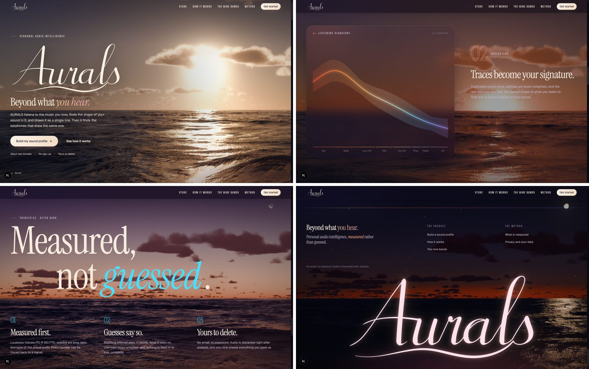
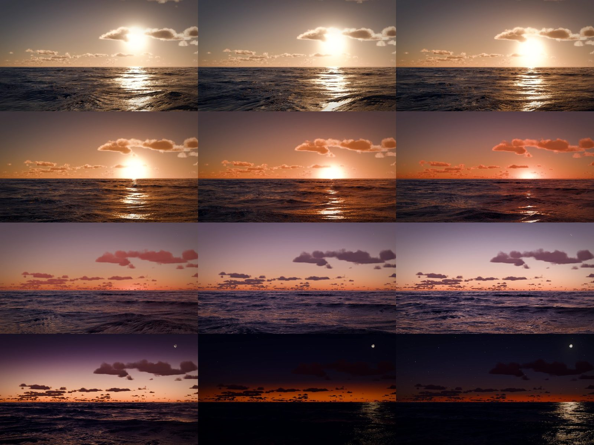
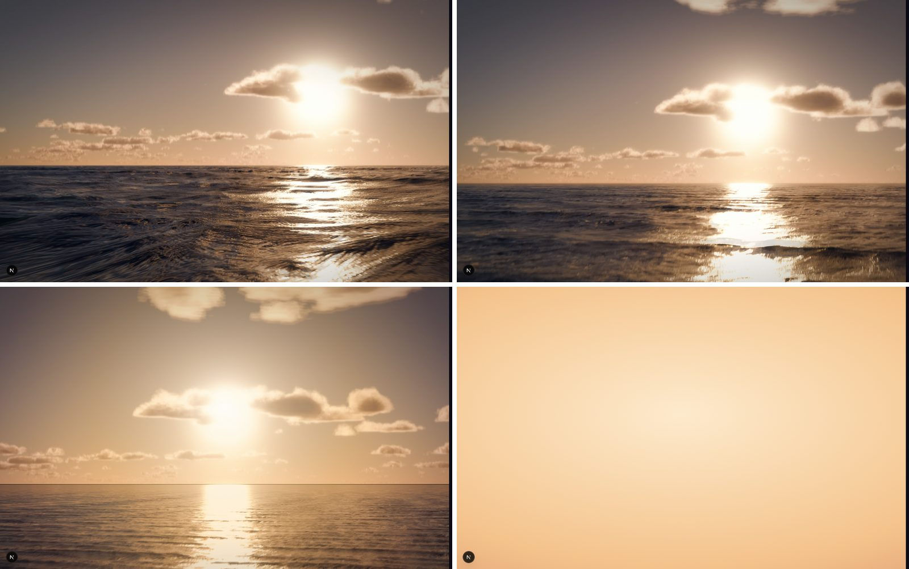
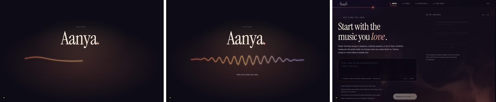
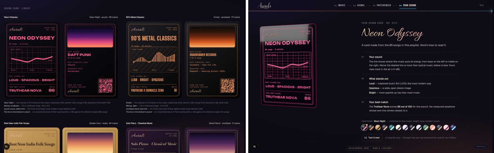
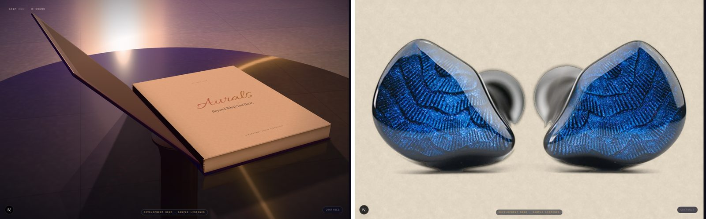
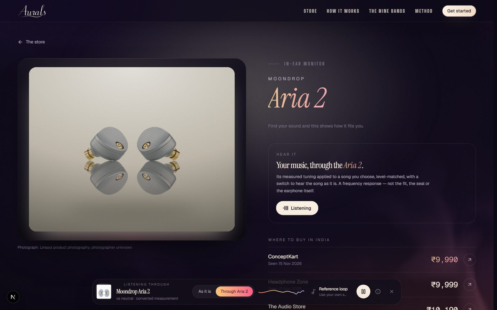

AURALS finds the in-ear earphones that match the way you like music to sound — from the music itself, not from a quiz alone.
| Technology | Version | What it does here |
|---|---|---|
| Next.js (App Router) | 16.3.5 | The web framework: routing, server/client components, static assets (films, images), and a rewrite that forwards /api/* to the Python API so the browser talks to one origin. |
| React + React Compiler | 19.2.8 / 1.0 | UI. The React Compiler memoises components automatically (no hand-written useMemo). |
| TypeScript | 5.9 | Types end to end. API types are generated from the backend's OpenAPI schema (openapi-typescript 7.13), so a backend change that breaks the frontend fails the type check. |
| Tailwind CSS | 4.3 | Styling: design tokens (colours like sunset, ember), utility classes. |
| Motion (motion/react) | 13.4 | Most UI animation: enter/exit, springs, scroll-linked values (useScroll), shared-element "layout" animation (layoutId), SVG path drawing and morphing. Motion is the library formerly called Framer Motion. |
| three.js + React Three Fiber + drei | 0.187 / 9.8 / 10.7 | Real-time 3D: the Sound Card (a physical card with engraved artwork) and the Listening Edition (a 3D book on a terrace). |
| WebGL / GLSL (own helper) | — | lib/grain/gl.ts: a small helper for full-screen fragment shaders and GPU point clouds — the Afterglow background, the live evening sky, the analysis "Arrival" particles. |
| Canvas 2D | — | Playing the Blender films frame by frame, reading product-photo colours, rasterising book pages and card faces into textures. |
| SVG | — | Every chart (frequency responses, the Signature Stage), the pen-drawn wordmark, the research constellation, the name transition. |
| Web Audio API | — | All in-browser sound: the A/B tuning duel (biquad filters), listening through an earphone (convolution with an FIR filter), loudness matching (offline rendering), "hear this band" pink noise. |
| TanStack Query + openapi-fetch | 5.103 / 0.17 | Data fetching, caching and polling of job progress. |
| opentype.js, qrcode-generator | 1.3 / 1.4 | Sound Card text turned into vector outlines (so it can be engraved); the QR code on the card's back. |
| lucide-react | 1.47 | Icons. |
| Technology | Version | What it does here |
|---|---|---|
| Python | 3.13 | Everything server-side. |
| FastAPI + Uvicorn | ≥0.141 | The JSON API (/api/...), with an automatic OpenAPI schema. |
| Pydantic 2 + pydantic-settings | ≥2.11 | Request/response validation; configuration from AURALIS_* environment variables; secrets as SecretStr. |
| PostgreSQL + SQLAlchemy 2 + psycopg 3 | — | The database and ORM. Also the job queue (no Redis/Celery needed). |
| Alembic | ≥1.16 | Database migrations. |
| yt-dlp | 2026.8 | Reads YouTube metadata and downloads audio temporarily — restricted to YouTube extractors and to canonical URLs AURALS builds itself. |
| PyAV | ≥15 | Decodes audio with a bundled FFmpeg (no system install). |
| NumPy, SciPy, librosa, soxr | — | Signal processing: STFT spectra, loudness filters, tempo (beat_track), onsets, harmonic/percussive separation (HPSS), mel/MFCC, resampling. |
| scikit-learn | ≥1.7 | K-means clustering and silhouette scores to find "listening modes" in a library. |
| LLM (optional) | — | Google Gemini (default gemini-3.5-flash-lite) or Anthropic Claude, used only to label quoted review passages with a topic and stance. Off unless a key is configured. |
| Tool | Use |
|---|---|
| Blender 5.2.3 (Cycles, OptiX) | Path-traced films for the homepage and the departure transition, rendered on an NVIDIA RTX 3090; the book's terrace (light baked in Blender). |
| Physical Atmosphere² 3.0.9 | Blender add-on: a physically based sky — sun, scattering, volumetric clouds, stars, Milky Way, moon. |
| Physical Open Waters 1.2.3 | Blender add-on: an ocean driven by a physical wave spectrum (wind speed, wavelengths, choppiness). |
| OpenCV + NumPy + Pillow | The film's colour grade (bloom, split-tone, vignette, de-streak, dither) and WebP packaging. |
| pytest, Vitest, Playwright | 259 backend tests, 101 frontend unit tests, end-to-end browser tests on desktop Chrome and a Pixel 7 profile. |
| ruff, mypy, ESLint, Prettier | Linting, static types and formatting on both sides. |
scripts/dev.py, Start-Auralis.cmd | One command starts PostgreSQL, the API, 9 worker processes and the web app; optional ngrok tunnel for showing it remotely. |
/api/* to FastAPI, so the session cookie is first-party.music.ingest, which selects tracks and enqueues one music.analyze_track per song. Workers claim jobs with SELECT … FOR UPDATE SKIP LOCKED (so two workers never take the same job), keep a heartbeat while they work, retry with back-off, and stale jobs from a dead worker are recovered.| Module | Responsibility |
|---|---|
| auth | Anonymous-first sessions (name only), HttpOnly cookie. |
| music | URL parsing, YouTube/Spotify import, track selection, the ingest/analyse pipeline. |
| analysis | Decode, STFT spectra, loudness, descriptors, curation (duplicates, outliers, clusters), library aggregate. |
| questionnaire, tuning | The nine questions; the listening session (shapes, duel, devices, per-question examples from your songs). |
| sound_profile | The Bayesian fusion model (sound-profile/3) and its documented assumptions. |
| acoustics, iem | Frequency-response processing, the Olive model, catalogue import with provenance, photos, prices. |
| recommend | harman-personal/1 ranking, rig conversion, a simpler comparator for evaluation. |
| store | The store's catalogue browsing and the listening curve for any earphone. |
| reviews, research | Publication reviews and community (Reddit) evidence, relevance filtering, LLM labelling. |
| jobs | The Postgres job queue, worker processes, registry. |
| evaluation | Offline checks: is the representation stable, how much each assumption matters. |
The site is set across one evening. The homepage is the real place — a sea at sunset. Every other page keeps only its light, and the journey's pages move through the hours: golden hour when you start, sunset on your music, dusk while it is measured, blue hour while you listen, night when you meet your sound.
| Route | Name in the product | What happens |
|---|---|---|
| / | Home | The sea film plays with your scroll. |
| → transition | The Ascent | The camera dives over the waves, rises into the sun, the light opens onto the next page. |
| /start | Name | "What should we call you?" — creates your anonymous profile. |
| → transition | The Name | Your name is written large; a line beneath it starts listening. |
| /music | 01 Music | Paste songs and playlists. |
| /analysis/[id] | 02 Signal | Your songs are measured, live. |
| /tune | 03 Preferences | Listening session, then nine questions. |
| /world | 03 Preferences | Where you listen, budget. |
| /match | 04 Your sound | Sound Card, your matches, the community, your music's fingerprint. |
| /card, /edition | Sound Card, Listening Edition | Your card on its own; the printed book. |
| /research/[slug] | Community | What owners and reviewers said about one earphone. |
| /store, /store/[slug] | The store | Every product, with rupee prices — and the listening bar. |
| /method | Method | The method, explained chapter by chapter. |
Blender filmCanvas 2DMotion useScroll + useSpringSVG
What you see. A path-traced film of open sea plays as you scroll: golden hour behind the hero, the sun touching the water as you reach "how it works", a violet dusk through the nine bands, and at the bottom a night of stars, a crescent moon with its path on the water and a distant coast lighting up. The AURALS wordmark writes itself like a pen stroke; the hero's words lift away and one line, "Every song you love has a shape.", crosses the shot.
How. 144 frames (1920×1080) rendered in Blender, graded in Python and saved as WebP (29.7 MB). LandingScene fixes a <canvas> behind the whole page. Motion's useScroll gives the scroll position 0–1; a spring (useSpring, stiffness 40, damping 24) smooths it so the light changes with inertia; FilmCanvas maps it to a frame, draws the nearest loaded frame and cross-fades in the next one for sub-frame smoothness. Frames load nearest-first, six at a time. A colour veil whose opacity follows the scroll keeps the text readable. This technique is called a scroll-scrubbed image sequence (the one Apple uses on product pages).
Other pieces. The wordmark is SVG paths from a pointed-pen model (design/brand/wordmark.py), animated by stroke drawing. "Hear this band" in the band explorer plays pink noise band-limited to that band through Web Audio. If the film is missing, a live GLSL shader sky (EveningSky) plays the same hours instead.


Blender filmCanvas 2DCSS radial bloom
Pressing Build my sound profile plays a second film rendered from the same Blender scene: its first frame is the homepage's first frame, so the cut is invisible. The camera skims fast over the swells (with motion blur), rises to about 48 m and turns into the sun; then the sun "blooms" over the screen (a scaled, fading radial gradient), the light settles into the name page's own dusk colour, and the name page comes up out of it — dark onto dark, so there is no muddy frame between gold and the page.
If you press it lower down the page — at sunset or at night — the homepage film first runs back to golden hour (about 0.4–1.2 s), so time never jumps. The ascent's 96 frames are prefetched 2.5 s after the homepage settles, the next route is prefetched, and the overlay waits until the next page has mounted (up to a 0.9 s grace) so the reveal never lands on a blank frame. With "reduce motion" switched on, it is a plain fade.

MotionCSS transforms
One field: your name. That creates an anonymous profile: a random 256-bit token in an HttpOnly cookie, of which only a SHA-256 hash is stored. No email, no password; everything can be deleted. Text rises line by line; a spectral underline grows when the field has focus.
Motion staggerSVG pathLengthSVG path morphing
After you submit, your name is written large, letter by letter (staggered fade, rise and un-blur). A line in the product's colours draws itself beneath it (SVG path drawing with pathLength), then morphs into a pulsing waveform — as if it had started listening — with "Now, the music you love." Then everything lifts and blurs away into the playlist page. The morph works because both shapes are 96-point polylines, so each point can be interpolated.

MotionSVG
WebGL particles (GLSL)MotionSVG
Arrival. The songs that were imported ride past as a wall of covers, come apart into grain, the grain drifts on a divergence-free (curl-noise) flow — shearing and folding the way ink does in water — and is drawn into the outline of a pair of headphones. This is GPU particles in a GLSL shader through the project's own WebGL helper.
The scanner. Spinning records for the songs in progress; on the Signature Stage (the product's recurring log-frequency chart, 20 Hz–20 kHz) each finished song adds its own spectrum trace, and your listening signature (median, with the middle half shaded) sharpens as they accumulate. A track list with tiny spectra, and a brightness × energy "listening map". Everything is real backend progress, polled.
Web AudioMotion layoutIdSVG
How the audio works. Two parallel chains of six biquad filters (one per tonal dimension) and a fader each; level matching renders each version offline and compares its K-weighted loudness (the ITU-R BS.1770 pre-filter) with the original, so a louder version can never win just for being louder.
MotionSVG
Eight listening contexts (commuting, the gym, focus, and so on) with small motifs that move only while hovered or chosen, and a budget in your currency. Context is shown beside the results; it does not change the ranking (the code says so, and so does the page).
three.js / R3Fcustom shadersMotion layoutIdopentype.js
Composed as a sequence of rooms: the Sound Card and your top earphone; the recommended collection as a ranked index; the listening community; your music's fingerprint (the real covers of the songs measured, each with its own spectrum); and under the surface (the profile, what shaped it, each earphone's measurement against your target).
/card (it holds only the address — nothing about you).
Everything shown is the engine's output: rank, predicted rating with its 80 % range, region-by-region reasons generated from computed numbers, and the measurement each rests on. Selecting a match morphs between list and detail with Motion's shared-element layoutId. Each has a Listen button (section 7).
three.js / R3FBlender-baked lightingSVG → texturesWeb Audio
lib/playback), so pause, replay, skip and scrub are just operations on that clock. Optional, quiet sound is synthesised with Web Audio — no recordings.
SVG constellationMotionoptional LLM
An evidence constellation: sources on an outer ring, the themes they raise on an inner ring, and an edge only where a quoted passage actually talks about that theme. Three short phases (sources arrive, a trace runs from a source to a passage, themes gather), then an interactive graph. The evidence is 5 hand-gathered publication reviews and 40 Reddit discussions. Reddit retrieval is off by default (opt-in; it uses a third-party scraper, and that decision is recorded in the code). A relevance filter makes sure a thread is about this product (a "Nova" thread could be about two different earphones). An LLM only labels each quoted passage with a topic and a stance; it never writes text that is shown, and it can only discard, never add.
Motion layoutIdCanvas palette readerSVG chartWeb Audio FIR

SpectralTransitionProvider) owns every departure: it runs a clock, loads the next route behind the overlay at the right moment, and only reveals it once it has mounted.Two layers are kept strictly apart: what is measured (a reproducible number from the decoded audio) and what is interpreted (a heuristic score). Interpretation never happens in the measurement code.
TrackFeatures):
librosa.beat.beat_track), onset rate, percussive ratio (harmonic/percussive separation, HPSS); 20 MFCC means and spreads.calibration.json), so 0.5 means "typical music".Model sound-profile/3. For each of six tonal dimensions — sub-bass, mid-bass, warmth, vocal presence, treble, air — it estimates how many dB above or below the Harman in-ear 2019 target you want, as a Gaussian belief (a best guess and a spread). It also estimates energy, treble tolerance, detail, soundstage and naturalness, but those don't drive the ranking.
| Source | How it enters | Strength (documented assumption) |
|---|---|---|
| Population prior | θ ~ N(0, σ²): before any evidence, you are a typical listener. | σ = 3 dB bass, 2.5 dB treble & air, 1.5 dB mids — from Harman's listener research (Olive 2022; Olive & Welti 2015). |
| Your music | Library balance ẑ shifts the prior under a bivariate-normal link with correlation ρ: θ | music ~ N(ρσẑ, σ²(1−ρ²) + ρ²σ²·SE²). | ρ = 0.837, chosen so that a large library is exactly as informative as one direct answer. A hypothesis: no study has measured it. |
| Your answers | Each answer maps to a value in dB (bass: −3, −2, 0, +2.5, +5 dB) and is an observation y = θ + ε with Var ε = σ²(1−r)/r. | r = 0.70 (reliability of a single self-report item, Wanous et al. 1997); 0.35 for an answer inferred from a neighbouring question. |
| Your listening | Each duel choice updates a belief by a probit (Thurstone) model with assumed-density filtering — the closed-form update used in TrueSkill-style ratings. The shape pick is one wide observation (±3 dB). | Choice noise 8 dB²; consistent on the repeated trial → ×0.8 noise; inconsistent → ×1.8. Unknown device → +2.5 dB spread. |
This is the whole idea: nothing about the balance is fixed. A source with a smaller variance counts for more, automatically. If your device is known and measured on the reference rig, its own deviation from the target is added back to your listening choices (you chose a change relative to what you were wearing).
Computed with the project's own code for a typical listener — a large playlist, all questions answered, the full duel, earphones not identified:
| Dimension | Population | Music | Answers | Duel | Shape | Final uncertainty |
|---|---|---|---|---|---|---|
| Sub-bass | 15% | 33% | 35% | 9% | 9% | ±1.2 dB (from ±3) |
| Treble | 16% | 34% | 37% | 7% | 6% | ±1.0 dB (from ±2.5) |
| Vocals | 18% | 38% | 41% | 1% | 3% | ±0.6 dB (from ±1.5) |
With a measured device the duel rises to about 15% for bass (shape about 13%). Music and answers carry roughly 70% together. The duel is light because 8 trials are spread over six dimensions.
The output is a preference curve: nine band offsets in dB relative to the reference target, with an 80 % credible range — the line you see drawn as "your sound".
Recommender harman-personal/1: content-based — it compares each earphone's measured sound with your target. It does not learn from other users, so there is no cold-start problem and no popularity bias.
| Term | What it measures | Cost |
|---|---|---|
| SD | Standard deviation of the error curve: how bumpy it is — peaks and dips. | 8.5 points per dB — the heaviest. |
| slope | Slope of the error against log-frequency: an overall tilt (too much bass overall, too bright overall). | 6.8 points per unit of slope. |
| AAE | Average absolute error from 40 Hz to 10 kHz after aligning at 500 Hz. | 3.5 points per dB. |
band-rms/1, reliability-weighted RMS band error) exists to check that results are not an artefact of one model.New: from the store or your matches, press Listen and your music plays through that earphone's measured tuning.
GET /api/store/products/{slug}/listen returns a gain curve: the earphone's measured response minus a baseline. The baseline is your own earphones if you told AURALS what you wear and they are measured on the same rig — then what you hear approximates swapping one for the other. Otherwise it is the reference target, and you hear the earphone's difference from neutral through whatever you are wearing.ConvolverNode in an OfflineAudioContext. The filter's delay is removed so the shaped clip lines up sample-for-sample with the original.| Quantity | Value (15 Nov 2026) |
|---|---|
| Products in the catalogue | 2,541 (earphones and headphones) |
| Frequency-response measurements | 4,052, covering 2,510 products |
| Matching pool (ranked in-ears) | 787 = 203 on IEC 60318-4 (oratory1990) + 584 converted from clone couplers (Super Review 393, Hi End Portable 181, squig.link 10) |
| Rig conversion basis | 60 earphones measured on both rigs |
| Products with verified photos | 1,848 |
| Price observations | 833; 460 products with a rupee price |
| Indian retailers | Headphone Zone, Amazon India, ConceptKart, The Audio Store, Flipkart, AVStore, HiFiNage, Pro Audio Brands, Reliance Digital, Ooberpad, Sony Center, ProHiFi |
| Targets | Harman in-ear 2019 (and a no-bass variant), on IEC 60318-4 |
| Review evidence | 5 publication reviews (hand-gathered) and 40 Reddit discussions |
| Song analyses cached | 1,488 |
Both films — the homepage sea and the departure ascent — are rendered from one Blender scene built entirely by script (design/film/sea/build_sea.py), so every choice is in code and reproducible.
| Element | How it is made |
|---|---|
| Sky | Physical Atmosphere²: a physically based atmosphere (Rayleigh and aerosol scattering with a maritime-tropical aerosol profile, clean air), three ray-marched volumetric cloud layers (low cumulus, mid altocumulus, high cirrus) at 50% coverage, stars and the Milky Way, and a moon. The sun's elevation is keyed from +6° (golden hour) to −16° (night). |
| Sea | Physical Open Waters: waves from a physical spectrum — wavelengths 0.15–70 m, height 2.4 m, wind 9.5 m/s, choppiness 0.28, waves from a spread of directions — plus faint capillary ripples, deep navy water and a few whitecaps. |
| Coast | Small emissive quads 12–16 km away, clustered into towns, fading in after sunset — a line of warm lights on the horizon. |
| Camera | 50 mm lens at f/2, 3.6–4.4 m above the water, a slow drift forward; the ascent adds motion blur and rises to about 48 m into the sun. |
| Colour | AgX view transform, "Medium High Contrast" look. |
grade.py) and playbackFilmCanvas (section 3).The names to use when someone asks "how did you do that?"
| Technique | What it is | Where |
|---|---|---|
| Scroll-scrubbed image sequence | A pre-rendered film whose frame is chosen by scroll position and drawn to a canvas. | Home |
| Spring smoothing | A value follows its target like a damped spring, giving motion inertia (Motion useSpring). | Home, everywhere |
| Path tracing | Rendering by simulating light paths; physically correct reflections and sky light (Blender Cycles). | Films |
| Volumetric ray marching | Stepping through a cloud's volume along each ray to accumulate light and density. | Film clouds |
| Spectral ocean | Waves summed from a physical wave spectrum set by wind and wavelength. | Film sea |
| Colour grading | AgX tone mapping, bloom, split-toning, vignette, dithering. | Films |
| Fragment shader (GLSL) | A small GPU program that computes the colour of every pixel, every frame. | Afterglow, evening sky |
| GPU particles + curl noise | Thousands of points moved on the GPU along a divergence-free noise field, so they swirl like ink without bunching. | Analysis "Arrival" |
| Real-time 3D (three.js / React Three Fiber) | A scene graph rendered with WebGL, declared as React components; frameloop="demand" draws only when something changes. | Sound Card, book |
| Custom shader materials | Materials whose look is computed by our own shader code (engraving, foil). | Sound Card |
| Baked global illumination | Light bounced around a scene computed offline in Blender and stored in textures. | Book terrace |
| Clock-driven (scrubbable) animation | Every frame's state is a pure function of time, so replay, pause and skip are trivial. | Book, card |
| Shared-element / layout animation (FLIP) | An element moves smoothly between two layouts; Motion's layoutId. | Match, store, tune, header |
| SVG path drawing | A stroke drawn progressively (pathLength / dash offset). | Wordmark, name transition, charts |
| SVG path morphing | Interpolating between two shapes with the same number of points. | Name transition |
| Staggered reveal | Items (letters, lines) animate in with a small delay each. | Name, headings |
| Cross-fade at the playhead | Audio switches between versions in 40–60 ms without restarting. | Duel, listening bar |
| Linear-phase FIR filter | An audio filter that shapes frequency without phase distortion, built from a target curve. | Listening bar |
| Concern | What AURALS does |
|---|---|
| Accounts | Anonymous-first: a display name only. A random 256-bit token in an HttpOnly, SameSite=Lax cookie (Secure in production); only its SHA-256 hash is stored, so a database leak doesn't leak sessions. |
| CSRF | State-changing requests must carry a custom header (x-auralis-client: web); with SameSite=Lax cookies that closes CSRF without token plumbing. |
| Audio | Downloaded temporarily, measured, deleted. Only numbers are stored. Files chosen from your device are decoded in your browser and never uploaded. |
| URL input (SSRF) | User input is reduced to a (kind, id) pair; only URLs AURALS constructs reach yt-dlp, and extraction is restricted to YouTube extractors. |
| Secrets | Environment variables only (AURALIS_*), held as SecretStr, never sent to the browser. |
| Deletion | One action deletes the profile and everything that hangs off it (cascade). |
| Sound Card QR | Holds only an address; the card page needs your session, so a stranger scanning it reaches the start of AURALS. |
| Evaluation data | Real libraries appear only as anonymous aggregates. |
| External AI and scraping | Off by default. The LLM only labels quoted text; Reddit retrieval needs explicit opt-in. |
auralis evaluate sweeps every documented assumption (prior spreads, answer reliability, ρ…) to show how much rankings depend on each; a simulation checks that the tuning duel recovers a simulated listener's preference before any claim is made.Is this machine learning / AI?
Mostly classical and statistical, deliberately. Signal processing measures the music; a Bayesian model (closed-form Gaussian updates, a probit model for A/B choices) builds the profile; a published regression model (Olive et al.) scores earphones; k-means finds listening modes. An LLM is used only to label review quotes. There is no labelled dataset of "listener → favourite earphone" to train a supervised recommender on, and pretending otherwise would be overfitting to nothing.
Why should music predict what earphones I like?
It is a stated hypothesis (ρ), not a fact: people who listen to bass-heavy music may want more bass. That is why music never decides alone — it is weighed against your answers and your own listening, and the strength of the link is a single documented parameter that the evaluation sweeps (including ρ = 0, "music says nothing").
How do you combine music, answers and listening — what are the weights?
No fixed weights. Each source is a Gaussian with a variance; the posterior is the precision-weighted combination. For a typical listener that works out at about a third each for music and answers, the rest prior and listening (section 5's table).
What is the Harman target?
A frequency response that most listeners preferred in controlled blind tests by Sean Olive and colleagues at Harman. AURALS uses it as the "average listener" reference and moves it by your preferences.
How is the score calculated?
Score = 100.08 − 8.5·SD − 6.8·|slope| − 3.5·AAE of the error between the earphone and your target (Olive, Welti & Khonsaripour 2017), computed 256 times across your uncertainty and averaged.
Many earphones were measured on different equipment. Isn't that comparing apples and oranges?
Yes, which is why they are converted: the median difference between rigs is learned from 60 earphones measured on both, and the conversion's error widens each converted earphone's range. Earphones on rigs with no conversion are not ranked at all.
Do you store my music?
No. Audio is downloaded temporarily, measured and deleted; files from your device never leave your browser. Only the numbers are stored, and you can delete everything.
How does "listen through an earphone" work? Is it accurate?
Your music is filtered by the earphone's measured response minus a baseline (your own earphones if measured, otherwise neutral), with a linear-phase FIR filter, level-matched. It reproduces tonal balance only — not fit, seal, distortion or soundstage — and the page says so.
Why not WebSockets for progress?
Each step commits its own state; polling is simpler, survives refreshes and needs no extra infrastructure. The work is seconds-to-minutes, so 0.4–1.5 s polling is invisible.
How did you make the homepage animation?
A path-traced film of a procedural ocean and a physical sky, rendered in Blender with Cycles on an RTX 3090, graded in Python, saved as WebP frames, and played on a canvas by scroll position with spring smoothing — a scroll-scrubbed image sequence.
Why pre-render instead of real-time WebGL?
Path-traced water and volumetric clouds take 20–30 seconds per frame on a high-end GPU; no browser can do that 60 times a second. Pre-rendering gives cinema quality on any laptop for the cost of downloading about 30 MB of frames.
What is the Sound Card made with?
React Three Fiber (three.js) with custom shaders: the artwork is painted into textures and engraved into one of 14 materials; the finish is chosen from your music's measured character.
How do you stop a louder option winning the A/B test?
Every version is rendered offline and matched by K-weighted loudness (the BS.1770 measure) before you hear it.
What happens if a playlist is huge or contains junk?
Up to 120 songs, sampled evenly; live streams, long mixes and altered uploads are set aside before download; duplicates count once; outliers are detected; a small or inconsistent library automatically counts for less (its bootstrap standard error is larger).
Where do prices come from?
Observed listings from 12 Indian retailers, each with its source URL and the date it was seen; rupees first, cheapest first. Unknown prices are shown as unknown.
Is the Reddit data legal?
The Reddit provider is off by default; it is an explicit opt-in recorded in the code, using a third-party scraper. For a public launch it should move to Reddit's official Data API. Quotes are short, attributed and linked.
Say these before someone else finds them.